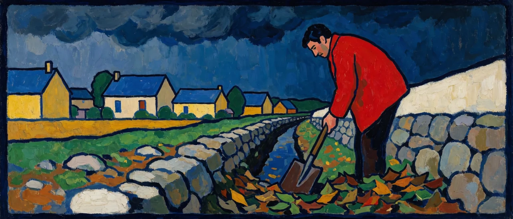
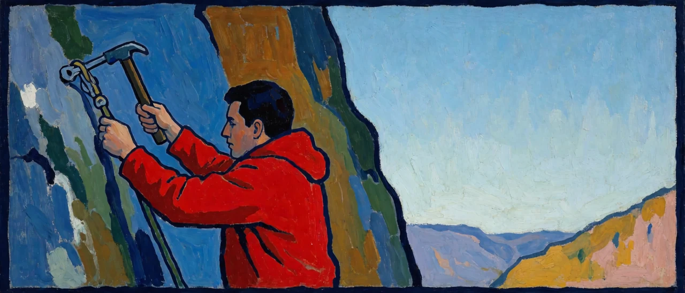

앞의 다섯 편은 한 산자 안에서 화신.. 핸들러.. 거버너를 갈랐고.. <인지공리05_1>은 이 다층 제어 구조가 협곡에서도 현실에서도 같게 동작한다고 적었다. 영역이 바뀌어도 구조가 그대로인지는 다른 영역에 옮겨 놓아야 확인되므로.. 이 글은 사태를 미리 막는 일과 터진 사태를 수습하는 일이라는 운영의 영역을 고르고.. 짧은 시 한 편에서 출발한다.
사태를.미리막은
거버닝들.보다는
비상사태.연쇄속
핸들링.서사부각
잘해야.원상태인
복구핸들링.보다
안정이행의.전제
거버닝이.본체다
별일있음.호들갑
이행의.발목잡고
별일없음.지속위
다른차원.열린다
1. 두 가지 일
시는 사태를 미리 막는 운영인 거버닝과 터진 사태를 수습하는 대응인 핸들링을 비교한다. 1연은 세상이 핸들링을 이야기로 만든다고 적고.. 2연은 핸들링의 최선이 원상태라고 적으며.. 3연은 별일 없음이 이어져야 다른 차원이 열린다고 적는데.. 두 가지 일 가운데 거버닝이 본체라는 판정은 2연 끝줄이 내린다.
2. 교전과 운영
<인지공리05_1>의 LOL 비유에는 두 층위가 이미 갈라져 있다. 핸들러는 국지적 교전의 정밀도를 제어하는 연산이고.. 거버너는 스펠과 스킬 소진 상태.. 미니언 웨이브.. 오브젝트 재생 시간을 종합해 판 전체를 승리로 끌고 가도록 그 정밀도 제어 자체를 제어하는 연산이다. <인지공리05_5>는 거버너의 효과가 교전 정밀도 축과 별도로 운영 판단 축에서 드러난다고 적었다.
시의 거버닝은 이 운영에 해당하고 핸들링은 교전에 해당한다. 운영이 잘된 판에서는 불리한 한타가 애초에 열리지 않는데.. 불리한 한타를 뒤집은 장면은 하이라이트로 남아도 한타가 열리지 않게 만든 웨이브 관리와 시야 장악은 남지 않으며.. 1연은 이 불균형을 적는다.

3. 서사는 핸들러가 만든다
<인지공리05_1>은 핸들러를 대상을 인식하고 그 인식에 서사와 정체성을 부여하는 층위로 규정했다. 서사를 만드는 기관이 핸들러이므로 핸들러 층위에서 벌어진 사건은 이야기가 되지만.. 거버너는 핸들러의 연산을 한 층 위에서 제어할 뿐 핸들러 층위에 사건을 남기지 않는다.
이 규정을 받으면 1연의 서사부각은 취향의 편향이 아니라 구조의 결과가 된다. 사태를 미리 막은 거버닝은 서사를 만드는 기관에 기록할 재료를 남기지 않기 때문에.. 막은 사람이 칭찬받지 못하는 까닭을 개인의 겸손이나 세상의 무심함에서 찾을 필요가 없으며.. 막은 일은 애초에 서사의 층위에 도달하지 않는다.
4. 잘해야 원상태
핸들링은 같은 좌표계 안에서 이탈한 좌표를 원점으로 되돌리는 연산이므로.. 복구가 완벽해도 결과는 사고 전의 좌표이고 잃은 것을 되찾을 뿐 축 위에서 한 칸도 나아가지 않는다. 2연의 잘해야 원상태는 이 한계를 적는다.
안정이행은 좌표가 이탈하지 않고 축을 따라 나아가는 상태이며.. 그 전제는 이탈이 일어나지 않게 하는 쪽.. 곧 거버닝에서 나온다. 핸들링은 거버닝이 뚫렸을 때 꺼내는 보조 수단이고.. 이행을 앞으로 미는 몸통은 거버닝이다.
5. 호들갑과 별일 없음
<인지공리05_2>는 핸들러가 습관적으로 과거에 대한 후회와 미래에 대한 불안이라는 시간 서사를 만든다고 적었는데.. 3연의 별일있음 호들갑은 이 시간 서사가 운영의 영역에서 작동하는 모습이다. 사건 하나마다 이야기를 부풀리고 그 이야기를 붙잡고 있는 동안 이행이 멈추므로.. 발목을 잡는 것은 사건 자체보다 사건에 붙은 서사이다.
별일없음 지속은 주의가 시간 서사에 끌려가지 않고 지금여기에 머무는 상태로서.. 트리거 문장이 켜는 거버너의 연산환경을 운영의 언어로 적은 구절이다. 그래서 거버너에게 별일 없음은 지루한 공백이 아니라 연산이 제대로 돌고 있다는 관측값이 된다.
6. 미리 막는 연산
사태가 사건이 되기 전에 막으려면 사건이 되기 전의 어긋남을 먼저 잡아야 한다. <인지공리05_2>는 명찰을 저장된 정보를 실시간으로 운용하며 위화감을 감지하는 작동으로 정의했으므로.. 시의 사태를 미리 막은 거버닝은 명찰이 현안 대응의 축 위에 내놓는 출력에 해당하고.. <인지공리05_5>가 거버너 개념의 정보량을 재는 축으로 첫 번째로 든 것도 위화감에 대한 반응성이었다.
미리라는 낱말은 시간 순서를 전제하는데 거버너의 연산환경에는 시간 축이 세워져 있지 않다. 그래도 둘은 부딪치지 않는다. <인지공리05_1>은 미래를 지금여기에서 하는 예측으로 규정했으므로.. 예방은 지금여기에서 감지한 위화감을 지금여기에서 처리하는 연산이기 때문이다. 시는 거버너가 무엇을 산출하는지를 적고.. 앞의 다섯 편은 거버너가 어떤 방식으로 작동하는지를 적는다.
7. 별일 없음은 격률을 통과하는가
<인지공리05_5>의 기준을 거버닝에 걸어 본다. 거버닝의 성과는 아무 일도 일어나지 않은 것이므로 한 판만 보면 관측할 사건이 없지만.. 관측할 사건이 없다고 정보량이 0인 것은 아니다. 거버닝의 유무는 비상사태의 발생 빈도라는 축과 이행의 진척이라는 축 위에서 좌표를 갈라놓기 때문에.. 같은 조건의 판을 여러 번 놓고 비교하면 차이가 잡힌다. 거버닝은 한 사건 안에서가 아니라 사건의 분포 위에서 눈금을 움직인다.
핸들링은 한 사건 안에서 눈금을 움직이므로 관측이 쉽고 그래서 서사가 되는 반면.. 거버닝은 분포 위에서 눈금을 움직이므로 관측에 비교가 필요하고 그래서 서사가 되지 않는다. 두 쪽 모두 정보량을 가지며.. 둘을 가르는 것은 정보량의 유무가 아니라 눈금이 움직이는 축이다.
8. 다른 차원
핸들러는 주어진 좌표계 안에서 원점을 지키고.. 거버너는 그 좌표계를 설정으로 보고 한 층 위에서 운용한다. 그래서 3연의 다른 차원은 축이 하나 더 서는 것으로 읽히는데.. 교전 정밀도 축 위에 운영 판단 축이 서듯이 별일 없음이 이어진 자리 위에 다음 목적의 축이 선다.
<인지공리01_0>의 확보된 거점도 같은 구조로서.. 안정된 전진거점은 다음 사이클의 출발점이 된다. 추락과 복구를 되풀이하는 등반은 같은 높이만 오가고.. 추락이 없는 구간이 이어져야 자일이 위로 박히고 고도가 올라간다. 거버닝은 자일을 제대로 박는 일이고 핸들링은 떨어진 뒤 로프를 타고 돌아오는 일이어서.. 돌아오는 기술은 있어야 하지만 그 기술로는 고도가 올라가지 않는다.

별일 없음이 이어진 자리에서 다음 축이 선다.